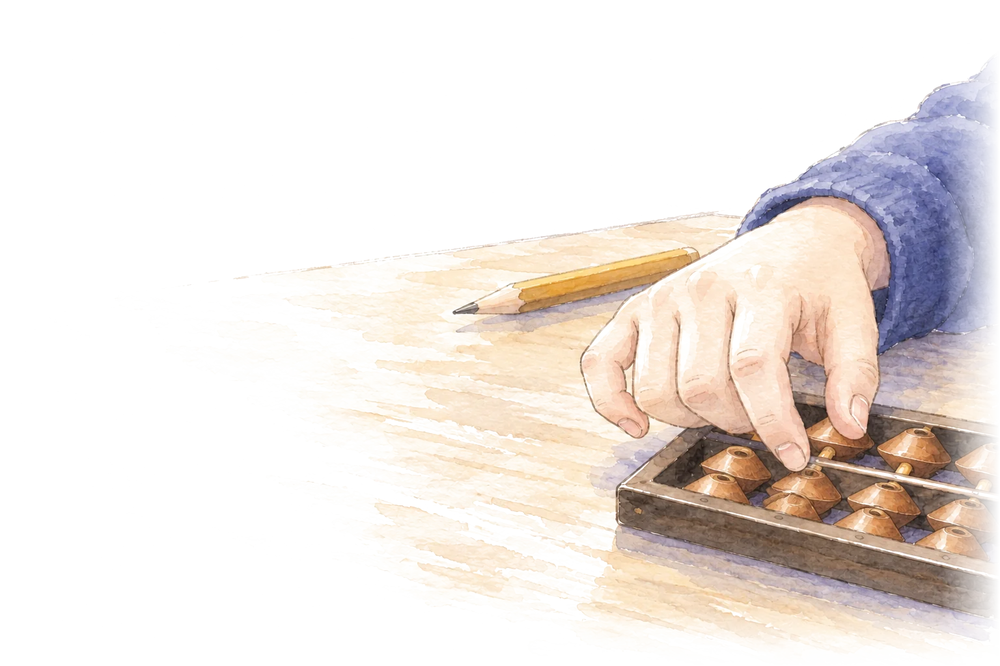

Soroban
デジタルそろばん
珠を、タップでも、ドラッグでも動かせます。実物のそろばんをさわったあとに、何回でもやり直すための練習の道具です。

一の位
0
やってみる
学年をえらぶと、コースが出ます。1コース5もん。数はまいかい作り直すので、何回でもできます。

1 / 5もん
Soroban
珠を、タップでも、ドラッグでも動かせます。実物のそろばんをさわったあとに、何回でもやり直すための練習の道具です。

0
学年をえらぶと、コースが出ます。1コース5もん。数はまいかい作り直すので、何回でもできます。

1 / 5もん